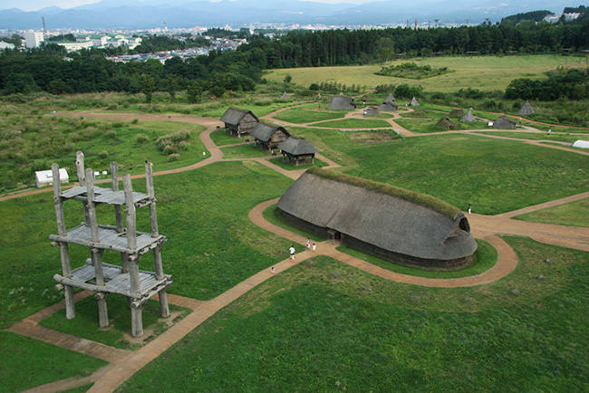
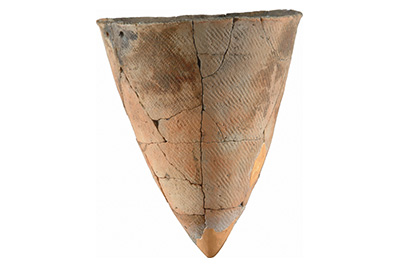
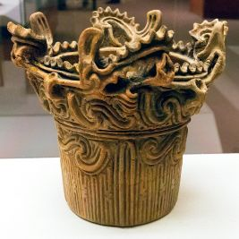
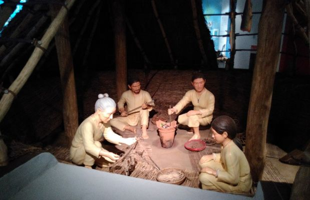

The origins of the people who inhabit the Japanese archipelago is contested in scholarly circles. It is known from archaeological evidence, however, that humans first started arriving in Japan sometime around 40,000 B.C. during the Ice Age. Little is known about these early Homo Sapien settlers of Japan. They arrived from the Asian Mainland, possibly by boat or via an ice-bridge that once connected Japan to the Korean Peninsula. A few examples of stone tools and axe-heads have been found dating back to this period. By the time the Ice Age ended about 14,000 B.C, these early humans were well-established in Japan. This marks the beginning of the Jomon Period.

Sannai Maruyama Site, a reconstructed example of a typical Jomon settlement.
The Jomon people were hunter-gatherers. They hunted wild animals such as deer and boar with bows and arrows, which were crafted from stone. Pit traps were also used when hunting. Fishing was also practiced by the Jomon, who caught fish in various ways, from spearfishing to regular line fishing. The Jomon also sourced food from gathering. Berries, walnuts, chestnuts and certain plant seeds were common items consumed by them. There is evidence to suggest that the Jomon people had advanced subsistence techniques, which included the long-term storage of food and even efforts at forest management.

Early Jomon Pottery

Later Jomon Pottery
The Jomon period is most characterised by the clay pottery that dates back to this time. Clay pottery was most abundant in the Jomon culture, with cord-marked pottery being the most defining style. This cord-marked style of pottery is where the period derives its name (縄文, Jōmon). The styles of pottery varied throughout the archipelago, and as the Jomon period progressed pottery became more sophisticated. Early Jomon pottery was primarily simple and conical in shape, with a pointed bottom. Flat-bottomed pottery was popularised later. Many elaborate examples of Jomon pottery survive; they come in a variety of patterns, for example, flame-marked pottery. Other crafts produced by Jomon people included dogu, which were clay statues representing people or animals such as horses.
While the Jomon were hunter-gatherers, they were semi-sedentary as opposed to nomadic. Small village communities existed with pit dwellings being the main form of shelter and housing for Jomon people. They consisted of a hole dug into the ground covered by a straw roof that was supported by a centre pillar. Other important buildings were raised in the air by wooden pillars, such as storage buildings. Jomon people were buried in pits in a fetal position, and these pit graves were usually located in rows in a certain area of a settlement.

Reconstructed Jomon family in pit dwelling, Sannai Maruyama siteLittle is known about their spiritual culture as written records about Japan do not appear for centuries after the end of the Jomon period. However, it is believed that the origins of Japan's native belief system, Shinto, has its roots in Jomon religious practices. Shinto followers believe in spirits known as kami, which can manifest themselves in different forms from natural forces and landscape features to material objects and spirits of deceased ancestors. Shinto has an emphasis on purity, with certain actions such as death, injury and childbirth being impure. While the origins of Shinto may be traced loosely back to this period, it is more accurate to say the first semblance of Shinto beliefs date to the Yayoi period, which follows the Jomon period.